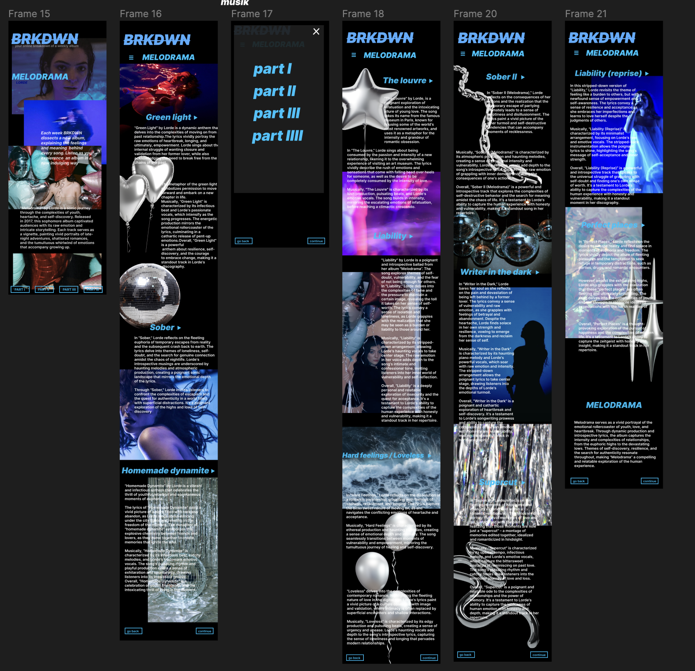

TEMA 3

03_ux
FORMÅL MED TEMA
Tema 3 (ux & ui) gav en grundlæggende forståelse for samspillet mellem brugere og brugergrænseflader, samt hvilke teorier, værktøjer og metoder man kan benytte til research, design og test i en digital produktudvikling.
Vi lærte i tema 3 at gå fra ide til produktion af hjemmeside, og have en bredere forståelse af hvilke design valg vi tager og hvordan de påvirker brugerens oplevelse af vores hjemmeside.
Vi blev introduceret til måder at teste vores hjemmesider på (5 sekunders test og Tænke-højt-test) som hjælper processen mod en færdig kodet hjemmeside. Til den færdige kodet hjemmeside, lærte vi at bruge light-house test for at se hvordan vores færdige hjemmeside præsterer.
OPGAVEN
Opgaveformulering
De næste 4 uger skal jeg designe og lave mit eget website om et valgfrit emne. Opgaven består af fem dele: Først skal jeg finde og udvælge et emne for mit website, som jeg har interesse i og kendskab til. Jeg skal definere et formål for brugeren på sitet, producere et første udkast, og teste min idé. Efterfølgende skal jeg lave en klikbar prototype i Figma baseret på mit udkast og gennemføre en brugertest af prototypen.
Jeg skal udarbejde en præsentation af min arbejdsproces og løsning og formidle min løsning til medstuderende og underviser. Endelig skal jeg gennem hele forløbet dokumentere mit arbejde og min proces med design og udvikling af mit emnesite i Figma og FigJam. Denne dokumentation skal også indeholde mine refleksioner og tanker.
Min Opgave
Jeg indledte min kreative proces med en omfattende brainstorming-session for at generere idéer. Efter en hurtig overvejelse blev jeg grebet af tanken om at skabe en musikorienteret platform, der tilbød ugentlige album breakdowns. Her ville kunstneren blive introduceret, og sangene på albummet ville blive dybdegående forklaret.
Jeg lagde vægt på, at hjemmesidens design skulle skifte ved hvert album og afspejle albummets stemning, hvilket resulterede i en simpel, men subtilt nuanceret æstetik. Dette skulle skabe en unik og dybdegående oplevelse for brugeren.
Undervejs i processen udførte jeg grundig research, lavede moodboard og styletile, og udarbejdede prototyper og wireframes. Jeg benyttede mig også af forskellige testmetoder for at sikre, at resultatet blev optimalt.
Link
Tema 3 projektDOKUMENTATION
STYLETILE & MOODBOARD
LOWFI
PROTOTYPER
LIGHTHOUSE TEST

SKÆRMBILLEDER